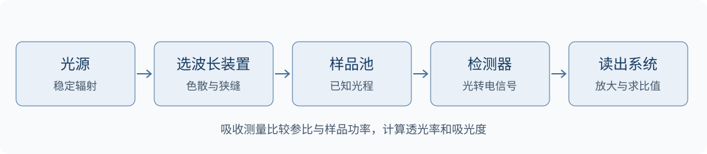

LECTURE 16 · 2026-11-19
光谱分析Ⅱ：光源、选波长装置与检测器
16.1 · INSTRUMENT OVERVIEW
把仪器拆成五个功能
吸收测量的基本路径是光源、选波长装置、样品池、检测器和读出系统。光源提供足够且稳定的辐射，选波长装置限制进入样品的波段，样品池提供确定光程，检测器把光功率转为电信号，读出系统完成放大、校准和数据输出。分光光度计把样品和参比的辐射功率联系起来，最终得到透光率与吸光度。
设计分析方法时，先定目标吸收波段和样品形态，再选择光源、材料、带宽与检测器。只要其中一段对所选光强烈吸收，就会减少到达检测端的有效功率。对阵列光谱仪，也可先让宽带光经过样品，再将透射光色散到阵列上，一次取得一组波长数据。

来源：16_Spectrochemical Methods Instrument.pptx，第 2–3、12、27、37、48 页。
16.2 · LIGHT SOURCES
连续光源和线光源
连续光源在一段波长范围发光，辐射强度随波长平滑变化，适合分子吸收的宽带扫描。线光源发出少数很窄的谱线，常用于原子吸收或校准等应用。光源需在测量波段有足够辐射功率，同时在样品与参比测量期间保持稳定，源漂移会成为功率比的误差。
紫外分子吸收常用氢灯或氘灯，典型范围约 160–380 nm。可见及近红外常用钨灯或石英钨卤素灯，实用波段常约 320–2400 nm，范围取决于灯泡窗口和整个光学系统。Xe 弧灯有宽带输出和较高亮度，常见于分子荧光激发。LED 功耗低，可在所需的一段可见波长内提供较集中的输出，白 LED 常由蓝光芯片和荧光体组合而成。
空心阴极灯能发出所含元素的特征谱线，其线宽很窄，适合相应元素的原子吸收。激光的谱线窄、方向性强，适于选定波长的高强度激发和散射测量。Hg 蒸气灯的特征线也可用于特定激发或波长标定。选择性来源要与具体实验相匹配。
红外热辐射源包括 Nernst 灯、Globar 硅碳棒与电热丝。加热后的固体产生宽带辐射。Nernst 灯用氧化物材料，Globar 以碳化硅为主体。输出强度和窗口透过范围共同决定可用波段。对红外区较弱的辐射，仪器往往需要更大的通光量，并采用合适的检测材料。
来源：16_Spectrochemical Methods Instrument.pptx，第 4–11 页。
16.3 · MONOCHROMATORS
狭缝、准直和色散元件
单色器包括入射狭缝、准直光学元件、色散元件、聚焦元件和出射狭缝。入射狭缝限定光源像，准直元件把光导向色散元件。不同波长沿不同方向传播后，在出射狭缝平面形成位置分离。旋转色散元件或改变出射位置，就可选择一个中心波长附近的窄带。
棱镜通过材料折射率随波长变化实现色散。在常见正常色散区，短波长偏折较大，色散对波长有明显非线性。相同狭缝宽度在不同波段可能对应不同波长区间，棱镜材料本身也限制透射范围。衍射光栅表面有大量等间距刻线，相邻刻线的波程差在特定方向满足相长干涉，不同波长由此分开。
式中 d 为刻线间距，α、β 为按该反射几何约定的入射角、衍射角，m 为衍射级次。相邻高阶与低阶的波长可落在同一角度，需要用级次选择滤光片处理重叠。在理想均匀照明近似下，分辨本领 R≈mN，N 为受照刻线总数。实际分辨率还受狭缝、像差和光路条件限制。
光栅的色散在有限角度和波长区间内可近似线性，使用范围宽。将“刻线越密”直接等同于完整仪器分辨率会漏掉受照面积与狭缝等因素，应先确认比较时固定的条件。常见紫外可见光栅可为每毫米数百至数千条，具体由波段、闪耀条件和所需色散确定。
来源：16_Spectrochemical Methods Instrument.pptx，第 13–18 页。
16.4 · OPTICAL FILTERS
滤光片的四种通带
吸收滤光片用有色玻璃或材料吸收不需要的波长，结构简单，通带通常较宽。干涉滤光片由多层介质膜组成，通过干涉选择透射和反射波段，常可获得更窄通带和较高峰值透射。滤片的实际响应还会随入射角等条件变化。
短通滤片透过短于截止波长的光，长通滤片透过更长波长的光，带通滤片透过两个边界之间的一段，陷波滤片则在宽通带中阻断很窄的一段。拉曼测量可用陷波或边缘滤片抑制强激发光，突出附近较弱的位移信号。
带通滤片要同时看中心波长、半峰全宽 FWHM 和峰值透过率。以半峰位置 λL、λS 表示，中心近似为两者平均值，FWHM 是两者之差。10–50 nm 是某些普通光度滤片常见的量级，窄带滤片可远小于此值。
来源：16_Spectrochemical Methods Instrument.pptx，第 19–24 页。
16.5 · SLITS AND BANDPASS
缩窄狭缝同时改变分辨与光量
实际单色器在名义波长两侧仍透过一定光，名义波长附近通常强度最大。光谱带宽可按强度降到峰值一半的两个波长之间的宽度定义。机械狭缝宽度以长度计，光谱带宽以 nm 或 cm−1 计，两者通过倒线色散联系。
在等宽入射、出射狭缝形成近似三角通带的模型中，底部全宽约为半峰全宽的两倍。缩窄狭缝使带宽变小，有利于分开邻近吸收结构和减少多色光的 Beer 定律偏离，同时会降低光通量。选择时要兼顾光子噪声和扫描时间，常把带宽设得明显小于待测吸收带宽，并验证吸光度随进一步缩窄是否趋于稳定。
来源：16_Spectrochemical Methods Instrument.pptx，第 25–26 页。
16.6 · SAMPLE CELLS
样品池材料、溶剂与光程
紫外测量常用石英池，可见光测量可用适合的玻璃池。普通玻璃会截断一部分紫外光。常见液体比色皿光程 1 cm，光程指两内侧光学面之间的距离。样品池的两个透光面要保持洁净，放置方向一致，避免指印、划痕、气泡和悬浮颗粒。流通池则把连续流动的样品接到液相色谱或流动注射系统中。
溶剂需能溶解样品，并在测量波段有足够透过率。选定波长前要检查溶剂的紫外截止，溶剂对待测物的形态、酸碱性及络合也可能改变谱图。空白应包含相同的溶剂和试剂条件。
透射红外样品池常用 NaCl 等红外窗口材料，需保护其免受水和湿空气侵蚀。实际材料要依据透过范围、机械性和耐溶剂性选择。纯液体吸收强，常用 0.01–0.05 mm 的短光程或液膜。固体可与适合的透明介质如 KBr 研磨压片，或用合适的分散液制成糊状物以减小散射。气体吸收弱，常用较长光程的气体池。
来源：16_Spectrochemical Methods Instrument.pptx，第 28–33 页。
16.7 · LONG PATH CELLS
用液芯波导增加有效光程
Beer 定律中，在 ε 和浓度已定时，增加光程可增加吸光度。普通长液柱会受到光束发散、池壁损失和溶剂吸收限制，波导通过约束光传播来延长相互作用距离。普通光纤以高折射率芯和低折射率包层形成全反射条件。
液芯波导毛细池 LWCC 将液体作为光学芯，需用折射率低于液芯的合适壁材或结构。可把厘米到数米的有效光程装进较小体积，在痕量分析中提高斜率。例如同样溶液在 1 cm 池为 1 mAU，理想 50 cm 池给 50 mAU。长光程也会放大溶剂和背景吸收，因此要检查空白稳定性与杂散光，选择实际可用的光程。
来源：16_Spectrochemical Methods Instrument.pptx，第 34–36 页。
16.8 · PHOTOEMISSIVE DETECTORS
光电管与光电倍增管
理想检测器在目标波段响应高、噪声低、稳定、响应快，并便于把输出放大。光电管含光敏阴极和阳极，光子使阴极发射电子，电场把电子收集到阳极，得到与入射光有关的微小电流。材料的光谱响应决定可测波段。
光电倍增管 PMT 在光阴极后增加一串倍增极，各级电位逐步升高。一个初始光电子撞击第一倍增极，产生多个二次电子，再逐级放大。十级左右可实现约 106 的电流增益，最终由阳极收集电子。增益来自电场提供的电子倍增能量，器件需要稳定高压，强光下还要防止过载。光阴极材料决定响应波段，常见 PMT 各有自己的工作范围。
来源：16_Spectrochemical Methods Instrument.pptx，第 38–43 页。
16.9 · PHOTODIODES AND ARRAYS
半导体检测器与同时采谱
光电二极管用半导体结把吸收光子产生的载流子分离并收集，光电流在合适范围内与入射光功率近似成正比。硅器件常覆盖可见和近红外，经过专门结构与窗口设计可延伸到紫外。其优势包括紧凑、低压工作和方便集成，光谱响应取决于半导体、结构和窗口。
光电二极管阵列 PDA 把多个检测单元排成一列。经色散后的不同波长落到不同像素，可同时记录一段光谱。传统扫描式逐波长测量，阵列式能快速取得完整光谱，适合跟踪色谱峰和变化较快的体系，也可通过多次平均降低随机噪声。波长间隔、狭缝像宽和像素响应差异仍需校准。
红外也可采用光伏检测器，其机理是吸光产生电压或电流。光导检测器在吸光后载流子增加，电导升高、电阻下降。材料选择、温度和所用电路共同决定响应，部分高灵敏器件需冷却。整个仪器最终把样品与参比功率转为 T，再计算 A，因此光源漂移、选波长误差、池状态和检测噪声都会进入最终结果。
来源：16_Spectrochemical Methods Instrument.pptx，第 44–48 页。